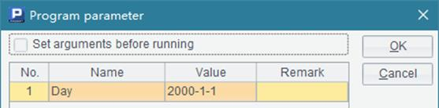
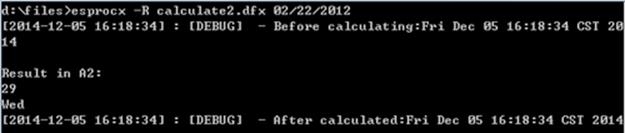
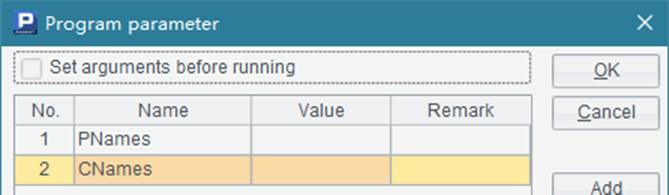

6.1.2 Cellset files with return results
When using the esprocx command directly at the command line, by default the result won¡¯t be displayed on the screen. To display the return result of the script file, use -R option in execution. Similar to the cellset file called by the call function, the script file must return the result using return statement. Take the following cellset file, D:\files\calculate1.dfx, as an example:
|
|
A |
B |
|
1 |
=days(Day) |
=string(Day,"EEE") |
|
2 |
return A1 |
return B1 |
This cellset will return the total number of days of the month in which the specified date occurs and compute what day the specified date is. It uses Day as one of its parameters:

Let¡¯s first look at the execution with -R option:
Here no parameter has been set for the execution and a default one, 01/01/2000, is used for the computation. You can see that A2 and B2 respectively return a result using return statement. The results will be listed respectively after computation.
To set a parameter, it should be the date type. As a parameter of date type or time type has its own format, you need to set the format in the configuration file raqsoftConfig.xml located in esProc\config path in esProc¡¯s installation directory:
<Esproc>
<dateFormat> yyyy-MM-dd</dateFormat>
<timeFormat>HH:mm:ss</timeFormat>
<dateTimeFormat> yyyy-MM-dd HH:mm:ss</dateTimeFormat>
</Esproc>
The execution is what the following shows if a parameter has been set for the call:
This time you get the total number of days of the month in which February 22, 2012 occurs and the day of the week for this date.
Different from the previous cellset file, the following D:\files\calculate2.dfx returns results as a sequence:
|
|
A |
B |
|
1 |
=days(Day) |
=string(Day,"EEE") |
|
2 |
return [A1,B1] |
|
The execution is as follows:

Members of the resulting sequence are listed respectively, each having a line.
Here comes the last sample of the cellset file - D:\files\calculate3.dfx:
|
|
A |
B |
|
1 |
$(demo) select * from CITIES |
$select * from STATES |
|
2 |
=A1.switch(STATEID,B1:STATEID) |
=A2.new(CID,NAME:City,STATEID.NAME:State) |
|
3 |
=B2.select(left(City,1)==Letter) |
|
|
4 |
return A3 |
|
The cellset file uses a parameter - Letter:

This cellset uses the database data. Here the database connection needs to be configured in the raqsoftConfig.xml file in the esProc\config path in the esProc installation directory:
<DBList encryptLevel="0">
<DB name="demo">
<property name="url" value="jdbc:hsqldb:hsql://127.0.0.1/demo"/>
<property name="driver" value="org.hsqldb.jdbcDriver"/>
<property name="type" value="13"/>
<property name="user" value="sa"/>
<property name="password" value=""/>
<property name="batchSize" value="1000"/>
<property name="autoConnect" value="true"/>
<property name="useSchema" value="false"/>
<property name="addTilde" value="false"/>
</DB>
</DBList >
Please refer to related documents for detailed configuration method.
When the program is executed, the result is as follows:

To set a parameter of string type, it¡¯s not necessary to surround it with double quotation marks, just enter it directly. Cities whose names start with letter B are listed in the above result. For a result of table sequence type or record sequence type, each record occupies a line and fields are separated from each other by tabs.
The above-mentioned configuration file, raqsoftConfig.xml, is also shared by the Integrated Development Environment (IDE), so information, like date format and datasource configuration, can be edited on the IDE interface. Click Tool>Option on the menu bar and configure the information on the Option window¡¯s Environment page:

Click Tool>Datasource connection in Datasource manager to configure database connection parameter and other information. For details, refer to Database Configuration.